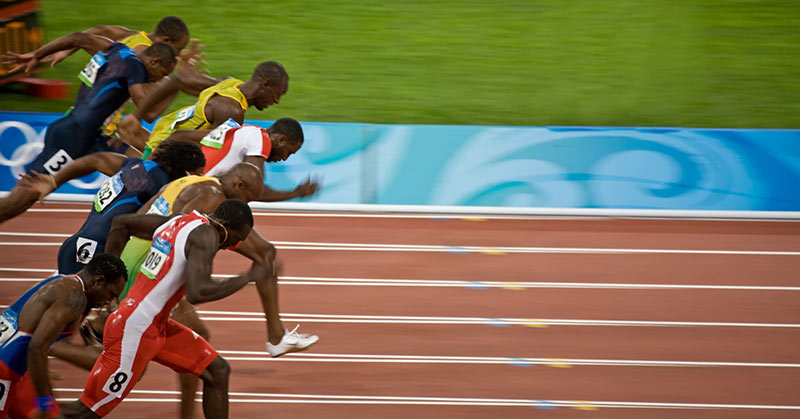

Peak Performance: The Science of Modern Professional Sports

Image source: https://simplifaster.com/articles/track-field-sprinter/
The landscape of professional sports has undergone a radical transformation over the last decade, shifting from raw grit to data-driven precision. Today’s athletes are no longer just training harder; they are training smarter by utilizing biometric sensors and real-time analytics to monitor every heartbeat and stride. This scientific approach allows coaches to tailor workouts to an individual's specific physiological needs, ensuring that they reach their absolute peak exactly when the championship season begins.
Nutrition has also evolved into a highly specialized discipline where every calorie is accounted for to fuel specific metabolic pathways. Gone are the days of generic "pre-game meals"; modern players work with chefs and nutritionists to consume precise ratios of macronutrients based on their blood work and sweat sodium concentration. This level of meticulous preparation helps prevent the dreaded "wall" during high-intensity matches and speeds up the body’s ability to repair tissue damage incurred during play.
Mental conditioning has finally taken its rightful place alongside physical drills in the elite athlete’s regimen. Psychology experts use visualization techniques and cognitive training software to help players process information faster under the immense pressure of a stadium crowd. By mastering the inner game, athletes can maintain focus during critical moments, turning potential defeats into legendary victories through sheer mental resilience and clarity.